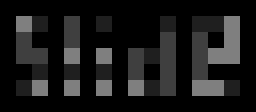

Author: Chieu Nguyen
As explained in the solution, the puzzle consists of four linearly polarized transparency sheets that when overlaid in sets of 3 in the original order, form patterns from which the answer WILLIAMS can be extracted.
To find the title, however, one must backsolve the puzzle from the solution. The solution says that "if you overlay them [the four transparency strips] on an overhead projector, you can see the title spelled out." Indeed, this is what must be done. But the solution only gives the images that result from overlaying 3 out of 4 sheets.
Luckily, these four images are sufficient to deduce what the image resulting from overlaying all 4 transparencies must look like. It is impossible to narrow down exactly what polarization angle is used for each cell, but this information is not necessary to find the title.
Since all polarization axes are offset by a multiple of 45 degrees, the amount of light passing through two overlaid transparencies is always 0, 50, or 100 percent of the light that passes through the first transparency, assuming a perfect polarizer. This follows from Malus's law: I = I0 cos2 θ, where I is the intensity of a beam exiting a polarizer, I0 is the initial intensity of the polarized beam, and θ is the angle between the two polarization axes. When the axes are parallel, the intensity remains the same; when the axes are orthogonal, all light is blocked; and when the axes are offset by 45 degrees, the intensity is halved.
When overlaying three transparencies, the possible intensity values are 0, 25, 50, or 100 percent, and when overlaying four transparencies, the possible values are 0, 12.5, 25, 50, or 100 percent. These values are sufficiently distinguishable from the images given in the solution.
Some logical deduction, or computer simulation, or maybe even playing with actual polarizers, should determine for each cell what intensity value it should have when all four transparencies are overlaid. The following table gives the intensity percentage resulting from overlaying all four sheets for every possible combination of intensities for three overlaid sheets, along with one example of a possible polarization configuration (any other configuration resulting in the same values in the first four columns also gives the same value in the fifth column).
| 2/3/4 | 1/3/4 | 1/2/4 | 1/2/3 | all | one possible configuration |
| 0 | 0 | 0 | 0 | 0 | ↕ ↕ ↔ ↔ |
| 0 | 0 | 0 | 50 | 0 | ↕ ⤢ ⤢ ⤡ |
| 0 | 0 | 0 | 100 | 0 | ↕ ↕ ↕ ↔ |
| 0 | 0 | 25 | 25 | 0 | ↕ ⤢ ↕ ↔ |
| 0 | 0 | 50 | 0 | 0 | ↕ ↕ ↔ ⤢ |
| 0 | 0 | 50 | 50 | 0 | ↕ ↕ ⤢ ⤡ |
| 0 | 0 | 100 | 0 | 0 | ↕ ↕ ↔ ↕ |
| 0 | 25 | 25 | 0 | 0 | ↕ ⤢ ⤡ ↕ |
| 0 | 50 | 0 | 0 | 0 | ↕ ↔ ↕ ⤢ |
| 0 | 100 | 0 | 0 | 0 | ↕ ↔ ↕ ↕ |
| 25 | 0 | 0 | 25 | 12.5 | ↕ ⤢ ↔ ⤡ |
| 25 | 0 | 50 | 25 | 12.5 | ↕ ⤢ ↔ ⤢ |
| 25 | 25 | 0 | 0 | 0 | ↕ ↔ ⤢ ↕ |
| 25 | 25 | 0 | 50 | 25 | ↕ ↕ ⤢ ↔ |
| 25 | 25 | 100 | 50 | 25 | ↕ ↕ ⤢ ↕ |
| 25 | 50 | 0 | 25 | 12.5 | ↕ ⤢ ↕ ⤡ |
| 25 | 50 | 50 | 25 | 12.5 | ↕ ⤢ ↕ ⤢ |
| 50 | 0 | 0 | 0 | 0 | ↕ ↔ ↔ ⤢ |
| 50 | 0 | 25 | 25 | 25 | ↕ ⤢ ↔ ↔ |
| 50 | 25 | 25 | 50 | 25 | ↕ ⤢ ⤢ ↕ |
| 50 | 50 | 0 | 0 | 0 | ↕ ↔ ⤢ ⤢ |
| 50 | 50 | 50 | 50 | 50 | ↕ ↕ ⤢ ⤢ |
| 50 | 50 | 50 | 100 | 50 | ↕ ↕ ↕ ⤢ |
| 50 | 100 | 25 | 25 | 25 | ↕ ⤢ ↕ ↕ |
| 100 | 0 | 0 | 0 | 0 | ↕ ↔ ↔ ↔ |
| 100 | 50 | 50 | 50 | 50 | ↕ ⤢ ⤢ ⤢ |
| 100 | 100 | 100 | 100 | 100 | ↕ ↕ ↕ ↕ |
The resulting image from all four transparencies is therefore the following:

The cells where any light at all is transmitted spell out the title: SLIDE.
As it turns out, the cells that are black in the result are precisely those where the corresponding cell is black in the 1/2/3 or 2/3/4 overlays. If you guessed that this was how the title was to be read, then it's a quick solve by inspection. You can also see the title by overlaying the 1/2/3 and 2/3/4 overlays with partial transparency in an image editor. These methods are not obvious, however, so it's unlikely that solvers will stumble upon them as opposed to constructing the 1/2/3/4 image and reading the title off of it.